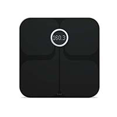

Fitbit Aria Wi-Fi Smart Scale
Fitbit Aria Wi-Fi Smart Scale
Description
Fitbit aria helps you know where you stand and get where you want to be with your weight goals. Aria is a high performance scale, tracking weight, body mass index (BMI) and % body fat over time. After easy, wireless set-up, your Fitbit aria scale taps into your home wireless network and uploads your information automatically to fitbit.com each time you step on the scale. Automatically recognizes up to 8 different people in your home, sending their info to separate accounts at fitbit.com. At fitbit.com you’ll get a complete weight management system to help you set weight goals, keep on track and achieve your targets. On your computer or smartphone, you can view charts and graphs of your weight trends over time to keep you on track. To keep you motivated, fitbit.com lets you set goals and earn badges, and then connect with friends and share that information as you see fit.
In Stock
Price $75.00
Customer Reviews
I bought the Fitbit Aria scale since I had already been using a Fitbit Ultra and have been tracking steps, distance, calories burned, flights of stairs climbed, active score, and sleep stats with my Fitbit Ultra already. This Aria scale integrates in nicely on the Fitbit.com site, and the weight and Body Fat% stats show up in the dashboard right below the steps and other stats. You can then drill down further to get the individual measurements over time and see some charts over time too.